Denver Travel Guide
Seaside city located on the Central Coast of California, known for the large estuary that is situated along the northern shores of the bay itself
Places to See in Denver

Black Hill Trail
Scenic hiking trail ascending a volcanic hill through oak woodlands and pine groves, offering panoramic views of the coastline and surrounding estuary.
,_Morro_Bay,_CA-400.jpg)
Mike Baird, CC BY 2.0, via Wikimedia Commons; Image Size Adjusted
,_Morro_Bay,_CA.jpg){kind=link}
Cerro Cabrillo
Steep volcanic peak featuring rugged rock formations and panoramic views of coastal estuaries, rolling hills, and the Pacific shoreline.
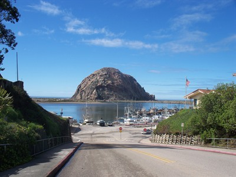
Konrad Summers, CC BY-SA 2.0, via Flickr; Image Size Adjusted
Embarcadero
Bustling waterfront promenade lined with shops, seafood restaurants, and harbor views where fishing boats, wildlife, and coastal scenery come together.
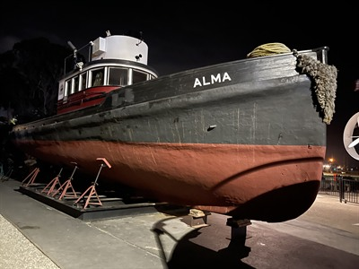
Missvain, CC BY 4.0, via Wikimedia Commons; Image Size Adjusted

Morro Bay Maritime Museum
Compact waterfront museum showcasing historic vessels, maritime exhibits, and artifacts that reflect the region’s deep connection to fishing and coastal life.
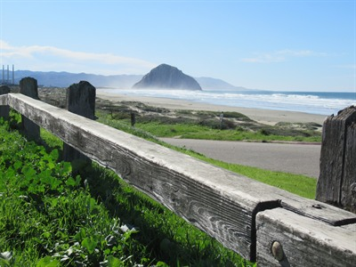
Collette14713, CC BY-SA 4.0, via Wikimedia Commons; Image Size Adjusted

Morro Bay State Park
Expansive coastal park featuring bayside wetlands, scenic trails, golf course views, and diverse wildlife set against Morro Rock and the Pacific Ocean.
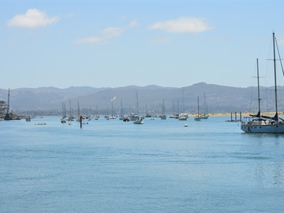
Blake Carroll, CC0, via Wikimedia Commons; Image Size Adjusted

Morro Bay T-Pier
A T-shaped waterfront pier extending into a protected harbor, offering panoramic views and frequent sightings of sea otters and coastal wildlife.

Charles Nadeau, CC BY 2.0, via Wikimedia Commons; Image Size Adjusted

Morro Rock Beach
Scenic coastal beach beneath Morro Rock offering sandy shoreline, calm bay waters, and sweeping views of one of California’s most iconic landmarks.
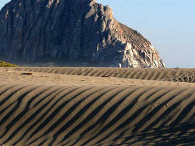
Mike Baird, CC BY 2.0, via Wikimedia Commons; Image Size Adjusted

Morro Strand State Beach
Oceanfront state beach featuring a long sandy shoreline, coastal dunes, campgrounds, fishing opportunities, and scenic views of Morro Rock and the Pacific coastline.
How to Get There
From Los Angeles (201 mi): Get on US-101 N from W Temple St. Follow US-101 N to Calle Real in Santa Barbara. Take exit 101B from US-101 N. Get on US-101 N from CA-154 W/San Marcos Pass Rd. Follow US-101 N to CA-1 N/Toro St in San Luis Obispo. Take exit 203B from US-101 N. Follow CA-1 N to Morro Bay Blvd in Morro Bay.
Overview
Morro Bay is a relaxed fishing town of about 10,000 people on the Central Coast, about 12 miles northwest of San Luis Obispo, set around a harbor and estuary behind a long sand spit. It is known for the 576-foot volcanic plug Morro Rock at the harbor mouth, for its sea otters and for the working waterfront of the Embarcadero.
Visitors come to Morro Bay to kayak and paddleboard on the calm estuary, to watch otters, seals and birds, to hike and bike on the sand spit and in the hills, and to eat fresh seafood at harbor restaurants. The town is also a base for visiting Montana de Oro State Park, Hearst Castle and the wineries of San Luis Obispo County.
History
The Chumash lived around the bay for thousands of years, and the Portuguese explorer Juan Rodriguez Cabrillo sighted the rock in 1542 and named it El Morro, "the crown-shaped hill." The town grew in the 1870s with ranching and shipping, was laid out in 1917 by Franklin Riley, who planned the waterfront. Morro Rock was quarried for harbor breakwater stone until 1969, when it was protected, and Morro Bay incorporated in 1964.
Sightseeing and Popular Landmarks
Morro Rock, a state preserve, is a nesting site for peregrine falcons, and the Embarcadero, the T-Pier and the three smokestacks of the old power plant are the best-known sights on the waterfront. Nearby, Morro Bay State Park, the Black Hill and Cerro Cabrillo trails, and the Nine Sisters chain of volcanic peaks add to the scenery.
Culture and Museums
The Morro Bay Maritime Museum tells the story of the harbor's fishing and sailing history, and the Morro Bay State Park Museum of Natural History displays the estuary's wildlife and the history of the Chumash. The Morro Bay Winter Bird Festival in January and the Harbor Festival in October bring crowds to the waterfront.
Parks
Morro Bay State Park has a marina, a golf course and a heron rookery, and the sand spit protects one of the largest estuaries on the California coast. Morro Strand State Beach and Morro Rock Beach offer walking and picnicking, and Montana de Oro State Park is a short drive south.
Seasons and Weather
Morro Bay has a cool coastal climate, with highs in the low 60s to low 70s°F year-round. Summer is often foggy and breezy, fall brings some of the warmest, clearest days, and winter is the rainy season, with about 17 inches of rain between November and March. Migratory birds fill the estuary from fall through spring.
This article uses material from Wikipedia as well as information from official tourism and institutional sources. Key references include Visit Morro Bay, City of Morro Bay, Morro Bay National Estuary Program, California State Parks, and National Weather Service Los Angeles. Wikipedia material is from the article "Morro Bay, California", released under the Creative Commons Attribution-Share-Alike License 3.0.
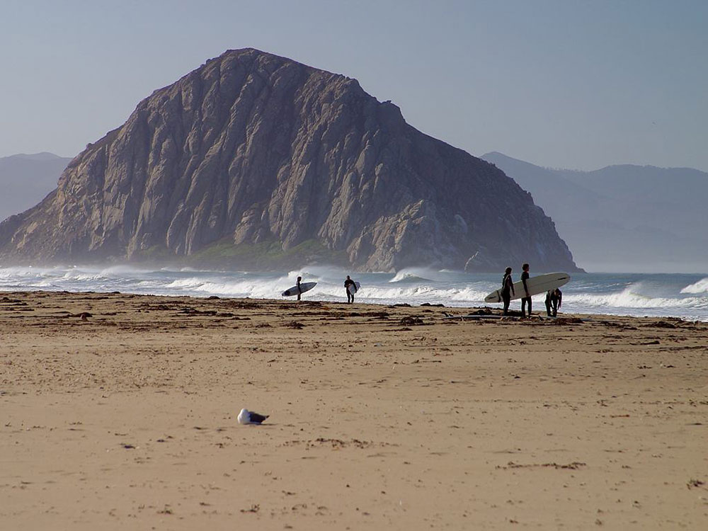

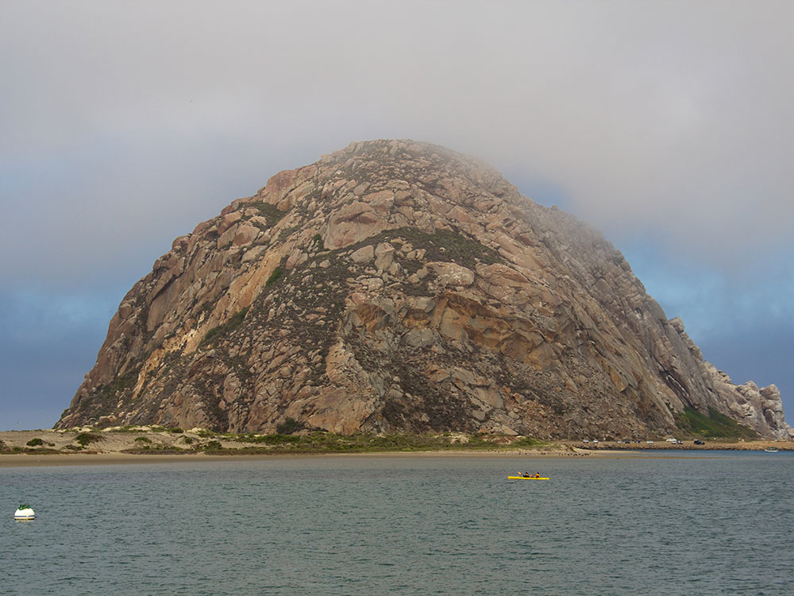

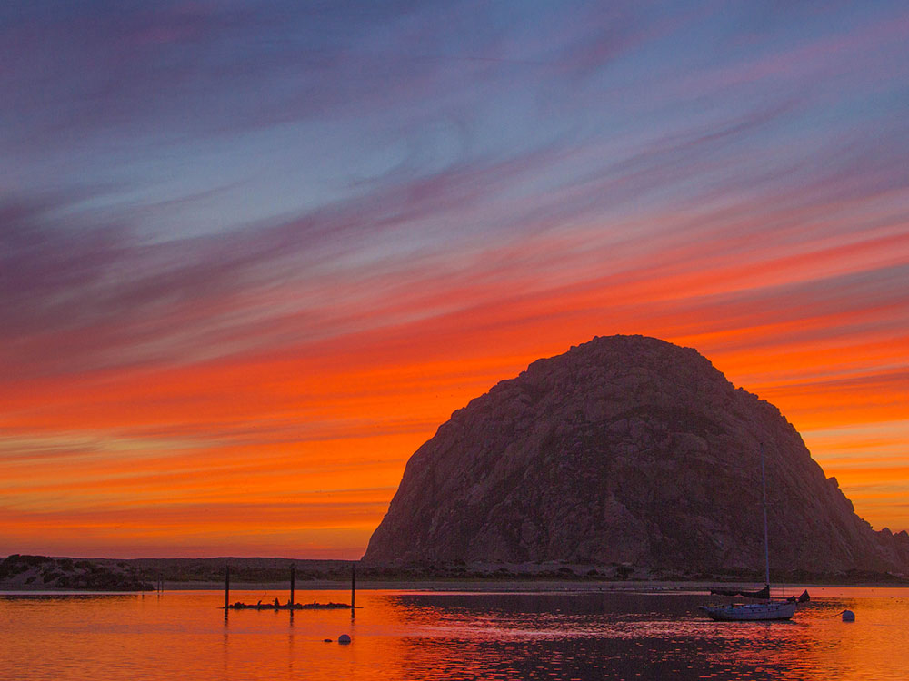
.jpeg){kind=link}
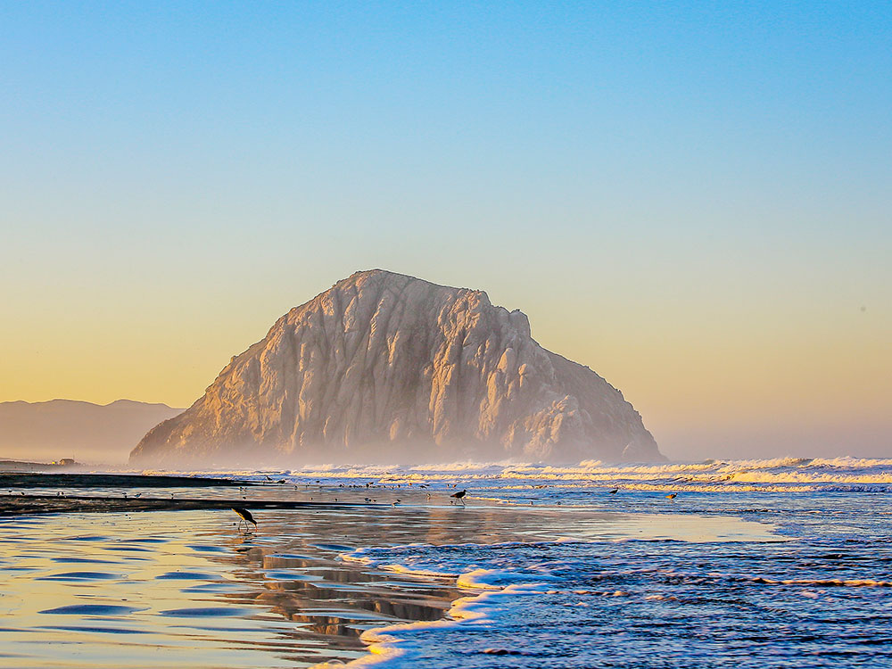
.jpeg){kind=link}
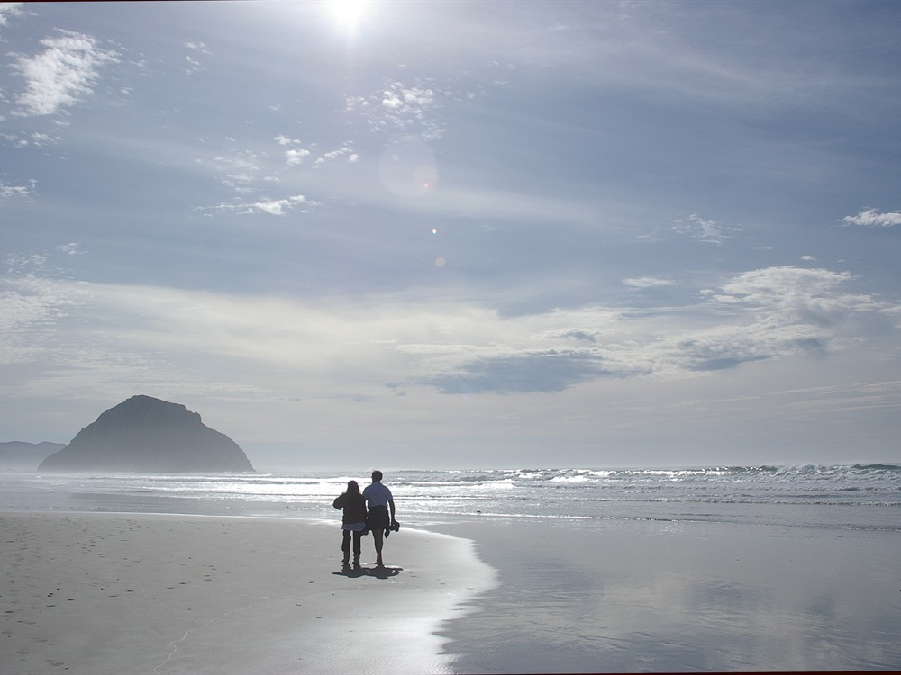
.jpg){kind=link}
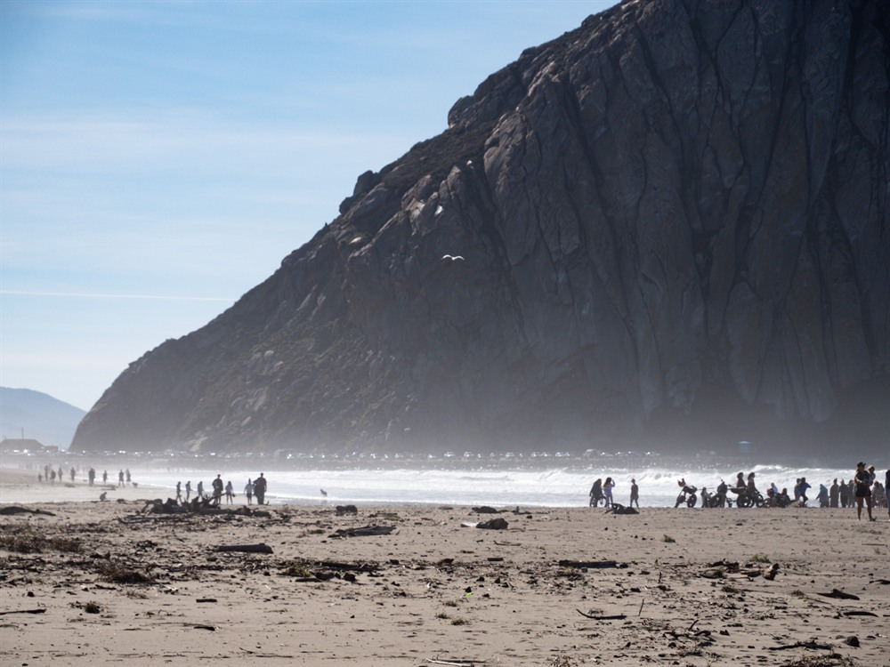

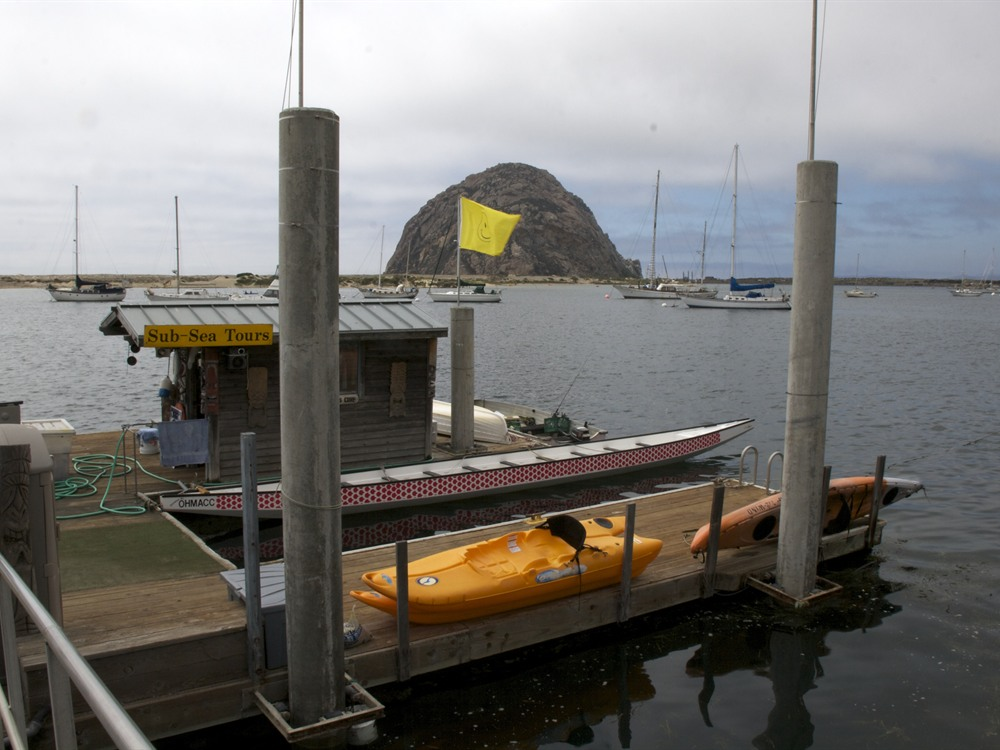